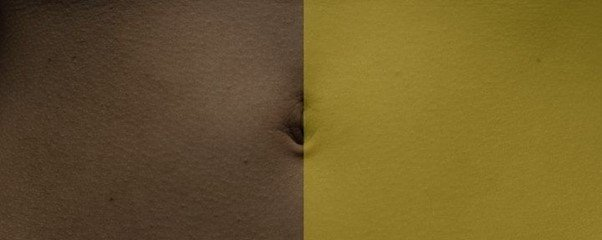
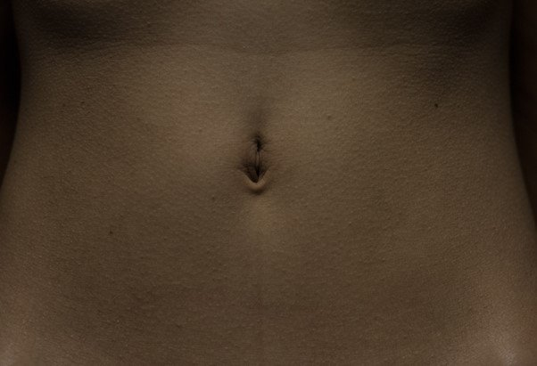
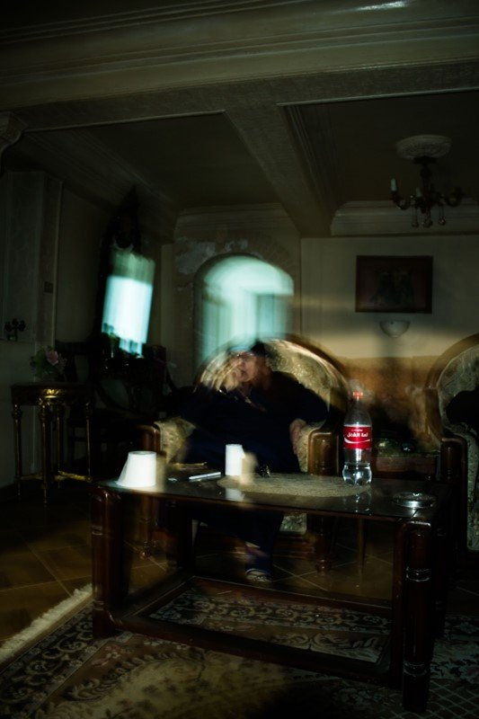
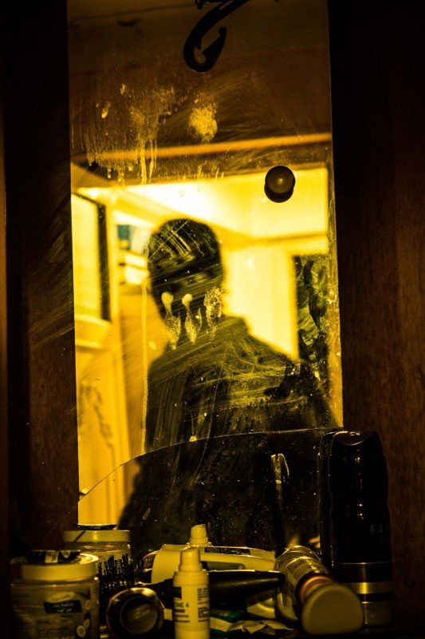
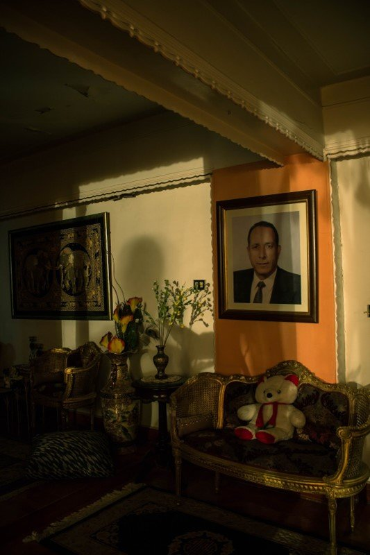
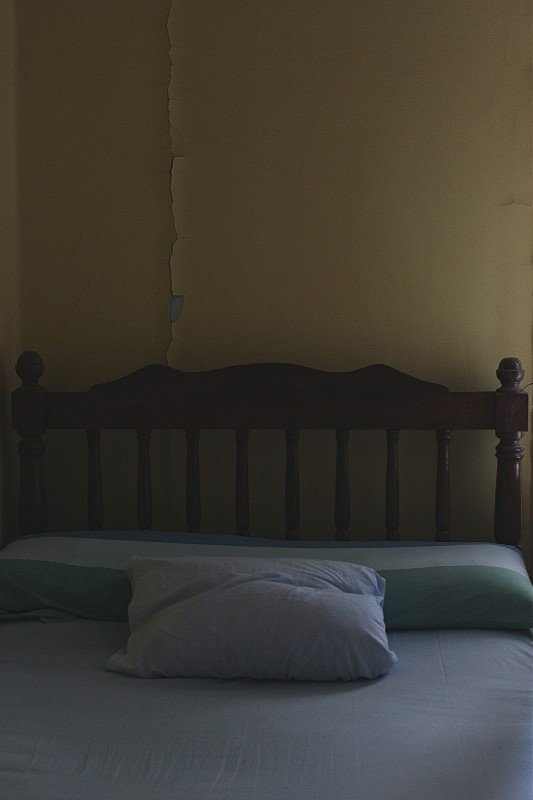
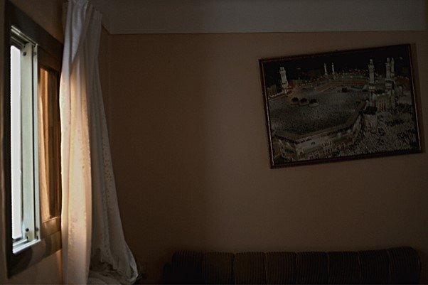

Originally published in Mada Masr on 11 September 2015
By Ismail Fayed and Lara El Gibaly
For Townhouse's "By Those Who Are Present," which runs until October 10, the three young photographers Assem Hendawi, Maged Abou El-Dahab and Osama El Wardani present personal photographs centered around their private spaces. Ismail Fayed and Lara El Gibaly attended the opening on September 7, and sat down afterward for a bit of critical musing.

Overview of "By Those Who Are Present" at Townhouse Gallery
Ismail Fayed: So you found the PR text to be sufficient?
Lara El Gibaly: Yes, it was very descriptive and clearly illustrated the theme of the show. I liked that it was so layered, as the pieces themselves had no titles. But at points it was a bit — I don't want to use the word self-indulgent —
IF: It bordered on too poetic and subjective.
LG: Which I feel is fine, considering it's a very subjective exhibition about the artists' visual take on their memories. But it was perhaps a bit verbose.
IF: Yes, it choked a bit under the weight of what it was trying to say.
LG: Yet the exhibition deals with absence, so there's a lot of metaphorical space in the photos, and the text fills that space.
IF: That's an interesting way of seeing it.
I actually didn't notice the lack of titles. Usually I'm obsessive about works having to be titled and the materials and dimensions described, because I don't like the assumption that artworks are self-evident or self-explanatory. But I didn't notice.
LG: And I think that's maybe a testimony to the quality of the text.
Also, the works are all very similar in style, they could almost have been produced by the same person. I know one of the artists, and as I understand it they are all friends and grew up in the same environment, so it makes sense that they'd either influence one another or all be influenced by the same factors, and so produce relatively similar works.
IF: I felt the exhibition was a story, a photographic narrative, and that's also perhaps why I didn't look for titles. The text implies an inner space, so I thought ok, I wouldn't expect to find titles on domestic scenes.
LG: Right, you wouldn't label the corners of your house "living room" and "bedroom."
IF: Yes, exactly. I'd have been furious were this an exhibition of a different kind. I would've been like, "How am I supposed to navigate this?"
Let's move to the text's attempt to point at the anxiety of allowing someone to see your personal space, whether your physical room or the metaphorical space in which you create as an artist.
LG: I didn't feel the artists were baring themselves because the nature of the images is very, not necessarily common — but for me they recall images of my grandmother's house. It's relatable, authentic and unpretentious. It didn't feel like they were taking me into something I otherwise wouldn't have seen, because my eyes were accustomed to seeing these objects arranged in these particular ways.
IF: I didn't feel I was intruding, but that there was a lot of anxiety. It's an anxious gesture to introduce your bedroom or your subjective take on space, your work. I felt this sort of tension: "here it is," and somehow we become responsible for it.
LG: I think it's the last line of the PR text that says that the artists are introducing us into their personal space, "giving us perhaps too much power." I think that relates to what you're saying: "here it is, do what you will with it." The artists become vulnerable.
IF: But they're not exposed in the sense of tabloid exposed.
LG: Exactly, it's not daring or in your face.
IF: Yet there's definitely a subtle vulnerability. You wouldn't walk into someone's bedroom unless it's in an intimate context. As a spectator you're not really supposed to see an artist's desk and bed and sheets.
LG: The image used for the poster, one of Maged's shots, that slender torso — you assume it was taken in an intimate setting.
IF: It's obviously someone trusting enough of the artist to allow them to make an image of their body.

Maged Abou El Dahab, intimate photography exploring personal spaces
LG: One line I liked in the text said the images create an association "of aversion and of refuge." I very much like the fact that these two notions seem contradictory. Aversion and refuge. Aversion implies something you're automatically shying away from, and refuge is something you're going toward readily and willingly.
That encapsulates it for me. These spaces are spaces you didn't choose, you simply found yourself in — the family home, et cetera. As an individual, but particularly as an artist, in your own process of reinvention you reject that space and there's an aversion to it, but at the same time you're always accosted with it.
I completely understand this feeling of wanting to create new things, things that are your own, but also being attached and tied to objects that aren't really yours but that make you who you are.
IF: But maybe "refuge" and "aversion" here is more about you as spectator? Spaces or objects that present themselves to you and you're averse to, because they're too personal. And at the same time, they might elicit a sensation of wanting to grasp onto them, because they're iconic. Like Assem's image of a mother, you know? That's an image of refuge, because she's his mother and she's present in a certain way.

Assem Hendawi, exploring family relationships and domestic spaces
I felt aversion looking at the image of a bed by Osama. I couldn't help feel, "Oh, maybe I shouldn't be looking."
LG: But because most of the images lack a human subject, I didn't feel voyeuristic, because there's this stagnancy and this suffused slowness — there was no action to be sneakily observing. I didn't feel uninvited, or that excited delicious naughtiness when someone shows you something you're not supposed to be looking at.
IF: With the three self-portraits, you commented that putting them in the same room was too easy or direct, like, drumroll, The Three Artists! I agree that was unnecessarily direct. It's also a strange transition, moving through the space and all of a sudden you encounter the artists.
LG: Exactly. Also the fact that they chose to present all their self-portraits as a silhouette or reflection, so you can't quite see their features — this stylistic similarity was off-putting.
But I did like some of the images. I liked Assem's with the yellow hues. It's very testosterone-fueled, there's a lot of tension and anxiety in it, and it reminded me of that awkward teenage phase, again, when you're trying to reinvent yourself as an independent human being. There's his looming figure in the mirror, with the squared shoulders making him seem more masculine, pointing to a desire toward a masculine image, which connects to the Rocky Balboa poster above the bed in his next image.

Assem Hendawi, self-portrait with yellow lighting exploring masculinity and identity
IF: That's an interesting observation, coming also from a woman, in relation to viewers' subjectivity and what they bring to an image. I didn't see it like that, that sort of masculine performance. The objects do give us a direction, like the shaving cream and electric shaver — this really looks like a man's bathroom, whether he's about to shave, or just shaved and is walking away. Yet to me it's more a reference to something, not a part of it. Like, here is a reference to all the things men do, and here's a silhouette of a man.
LG: I agree, it isn't necessarily an image of himself in the present moment. I feel he's dissociated from these objects, but affectionately looking back at that phase.
IF: To me the dark silhouette implies the "other side" of things — the performance or many performances of masculinity.
LG: Now that we're on the topic of masculinity, to me the dominant image of masculinity completely contradicts what they're trying to do with this show, this vulnerability.
IF: I thought the anxiety was very much within the expected psychological consequences of masculinity, of performing it. You can also argue that it's very masculine to be self-indulgent and self-obsessed.
LG: That came through to me in Assem's self-portrait. Maged's — the one you liked, the frame within the frame – wasn't like that at all. It was playful and almost absurd, glorifying domestic kitsch.
IF: It was hilarious because there's an image of a baby that's obviously not the artist. It's a blonde baby, a stock image. Then an image of his father, then the reflection of his own silhouette on the frame inside the image. So speaking of dissociation from your surroundings, that was very interesting. But is it not also some kind of self-congratulatory pat on the back? Anxious artist poetically reveals his vulnerability …
LG: Recently I've been seeing a lot of work in text and image that deals with absence. I'm personally a bit saturated with this theme at the moment. So while it was interesting and the images were moving, I feel like I've seen it before. We've all seen this theme tackled in various ways. It didn't detract from my enjoyment of the works, but I feel there's this newfound obsession with absence.
IF: It's also a hallmark of contemporary art, that the artist recedes into the background and the spectator becomes the subject of the work.
LG: One image by Assem was of a living room, with a portrait on the wall, I assume of his father — a patriarch, a very large portrait. You could very faintly see the photographer's silhouette on the wall next to the portrait, and I liked that juxtaposition, but I also liked that when I was standing in front of the picture, through a coincidence of lighting, my shadow fell on the artist's shadow. So that literally illustrates the point you're making — you seep into the work.

Assem Hendawi, living room with patriarchal portrait and artist's subtle silhouette
IF: Yes, and it's a major trend in contemporary art, works that make the audience part of how they come together finally. But it's very hard to make such work with photography, and that's why I think what they're trying to do is interesting. Because photography is a very static medium — once the photo is printed, that's it.
LG: This immersion into the work happened as soon as I stepped into the gallery, because the familiar images gave rise to a regression in my state of mind to when I was a lost child in a world of objects belonging to adults. Things that are ornamental and precious and off-limits to the pesky hands of a child. And now I feel there's something very beautiful about the pesky hands of these children having grown and now wielding cameras, very self-reflexively looking back at these environments.
IF: There was definitely a reflection on aging, which links to the anxiety the three artists obviously feel about growing up, and how that reflects back on their parents and on themselves. And how they see or don't see themselves in the traditional family setting of father, mother, son.
LG: This takes us back to absence and the fact that they seem to have intentionally snipped themselves out of these photos and contexts. Really, the only way to be able to look at these contexts is when you remove yourself from them, when you're no longer a part of them.
What comes to mind is the coming-of-age process. These are three relatively young photographers embarking on the beginning of their photographic careers, and the subject they've chosen for that is like they're shedding all of these things and inviting us to watch. There's something poetic and lovely about that.
IF: I want to sidetrack and talk about stylistic differences. You said that there were a lot of similarities, which is true, but also I feel there are different palettes. Assem's palette involves this tinged yellowish light, which works to his advantage because it gives the feeling of something very old.
LG: And to me also suffocating. Yellow and orange are the colors I associate with this city, at least in summer. It's dusty and hot, and you're indoors in an enclosed space.
IF: So Assem used that light palette a lot, whether natural light or artificial yellow light. Osama used a lot of dark shadows in his work, there is much more use of contrast between light and shadow. Maged is somewhere in between I think.
LG: Maged has more blues and greys.
IF: Assem also uses distortions a lot. With the camera itself, and with his own movement.
LG: One looked like he took the photo while literally lunging forward. I think this ties back to the fact that Assem's work is a lot more –
IF: Kinetic?
LG: Yes, kinetic.
IF: Yes, there's a lot more movement, there's something unsettled in comparison to the other works, which seem more static. The close-ups by Maged, one of a face and the other of a torso, are static but also give a very textured feeling.
LG: The torso, because of the size in which it was printed, really allows you to see the skin and minuscule hairs. I thought that was nice, and again vulnerable, to enlarge an image of a section of your body and expose any imperfections. That's intimate.
IF: It contrasts with the fleeting sensation you get from Assem's photos, this erratic unsettled feeling of taking an image. If Assem's work didn't have this quality it might slide into a meditation on domestic scenes, without that sense of anxiety.
Because I also see this in-betweenness, between being a child and an adult, or an amateur artist and an established artist, as reflected in that movement — I'm not sure whether intentionally or not — which saves it from being a meditation on domestic spaces. Which could still be beautiful, but not so interesting.
LG: I agree. There were a couple of motifs — like the image by Maged with the strong visible crack running all the way from the ceiling down to the bed — that were too direct a symbol for decay or the rupture between these two states. The crack is the focal point. It's fitting, but I feel like he's just saying, "Look at this crack, observe this crack, what is this crack telling you?" That was my one gripe.

Maged Abou El Dahab, bedroom with visible crack as metaphor for rupture and decay
There was another one that was kind of fun, also by Maged, with the picture of the Kaaba that was crooked. I like that something that is righteous and upright, the tall and straight minarets, are in a picture that's askew. I like the interplay between the notion of walking a straight and righteous path, and the crooked photo.
IF: I liked it because I thought it was a way of saying people have very crooked religious beliefs.
It's a stock image, you see it in any Muslim household anywhere in the world, yet it's misaligned and serves to show you that you actually do embrace stock beliefs about religion that are completely misaligned with who you are. And to me that really reflects, again, the mental and psychological state of the artists, who are reservoirs of all those experiences growing up in this particular context in this particular time.

Maged Abou El Dahab, crooked image of the Kaaba questioning traditional beliefs
LG: To me the slight crookedness is the artist not necessarily rejecting outright all of these notions, but there's a certain personal twist each of us places on these beliefs, morals and values that are passed onto us, or sometimes actual objects. So I enjoyed that, I liked what he was trying to do, versus the image of the crack.
IF: With the crack, like you said it can reflect neglect, but the bed was so freshly made. I liked the contradiction between the fresh sheets and the massive crack.
I remembered that in my old bedroom there's a massive crack and I never thought about it. There was an earthquake in 1992, and the wall cracked. My parents would have had to tear down the wall to fix the crack, and they never did.
LG: At the end of the day, this is what they're doing with the entire exhibition, taking things that are commonplace or that we've gotten used to, images that seem very recurrent, and framing them in a way to reflect their own coming of age.
IF: Do you know Hassan Khan's image of his mother Zeinab Khalifa, called A photograph of my mother shot on my cell phone on August 4, 2013, after six years of thinking about it and hesitating, which I absolutely love, because I know Zeinab, but also because in the image she is in a very apprehensive and wary kind of pose, like, "Ok you go ahead and take an image of me now." There's nothing emotional or sentimental, it's just Zeinab being self-conscious that she's being photographed.
It was shown in Khan's solo exhibition in D-CAF in 2014, and how it fit in to the rest of the work I thought was incredible. It was so unlike everything else in that exhibition. And the fact that it's an image taken by a mobile phone, it demystifies the whole "artist's mother" as a classic genre.
We see the artist's mother also in this exhibition, in her domestic interior, with a Coca-Cola bottle on the table. She's in her comfort zone. And I remember asking you, how do you think his parents reacted knowing they're going to be on display like that? We're intruding on this woman's space. She's in her living room, drinking her Coca-Cola having just finished lunch, and we're there. This brings up the question about photography being an intrusive voyeuristic practice.
LG: Because the subjects are clearly aware they're being photographed, I think nobody's under the impression that these photographs can convey to us with any accuracy what the artist's actual reality is, or what they're experiencing. We're entering another realm of meta.
Even with the placement of the bottle, the artist clearly wants to show you the text on it. And while the photograph is intimate, that bottle makes it feel staged, not in a way that detracts in any way from its value, because these are all staged photos.
I'd imagine for a lot of the photos where it's just objects, they've been arranged to convey a certain meaning. They're structuring the environment to convey a take on it. It's perhaps not its "natural" state.
IF: I think that some of the objects were actually just as they were. Yet, of course, the images are composed. So maybe that's a grey area.
But I was just thinking — there are a lot of questions about the rise of social media and Instagram, and constantly taking pictures of —
LG: Your "reality."
IF: Yes, creating a representation of yourself virtually, and where photography lies in that. All these big questions with photography right now.
And if you're not in the realm of social media and you take a picture of your mother for an exhibition, how does that function? That's what I was thinking of. In this day and age, when everyone's mother has Facebook — mine does, I'm sure yours does too — and now it's very ok —
LG: It's very accessible to see someone's mother, an image of someone's mother.
IF: Yeah, it's very ok, although we come from a society where personal space is organized around notions of taboo.
But how comfortable is someone's mother that her image is being used for an exhibition, and as a photographer, how comfortable are you with that? Knowing that this same mother might be on Facebook or Instagram. That tension between my mother as an artistic subject, and my mother as a social media user. Knowing that her image in both settings is visible to many, and having to contend with that.
This takes the work again from a very internal, introspective line of questioning to another realm of questions to do with photographic practices here and now, and how to gauge them. Is family fair game?
LG: I'm less troubled by this notion because of my work in journalism — if a photograph is taken with the person's consent, even if they're not necessarily aware of the context in which it's being used.
And regardless of whether a photograph is in an exhibition or on social media, you're inviting the viewer to impose their own take on it. Of course more so in an artistic context, where we literally come to a space to look and think, and at some points judge the work.
But I think we've come, us and our mothers, as people living in this world at this time, to take it for granted that it's ok, and very few of us stop to question what it is you're questioning. It's interesting that you're bringing it up.
IF: It's something I'm very concerned with, for photography as a medium, because consumption of images has become part of understanding reality. Reality has metamorphosed into a series of never-ending images.
And seeing an image printed in a particular way, framed in a particular frame, in a specific light, in a specific room creates a specific relationship to it. What is the difference? The way I viewed the image here is so different than if it was the artist's mother on Facebook. Assem opens up that can of worms through a specific scenography of space, light and placement. It tells us that photography is not dead, you can actually create very different relationships to the image, just through —
LG: The context in which it is consumed.
IF: Yes, the materiality of the image, the space-image relationship.
LG: Interesting.
IF: Obviously we like the exhibition. We think they're three promising photographers.
LG: Definitely. I'd be interested to see more of their work in a context where they're not their own subjects.
IF: Yes, and when they're not so anxious about creation. Because there's something self-referential about, "Ok, so we're expected to produce work, let's make our work about producing work." But they did it, and with a lot of intelligence and subtlety and heart, that's obvious.
If they're not so anxious about themselves and their medium, what will they produce? The visual poetics are beautiful, but aside from that, what will they be busy with artistically? I look forward to that.
"By Those Who Are Present" showed at Townhouse Gallery until October 10, 2015.